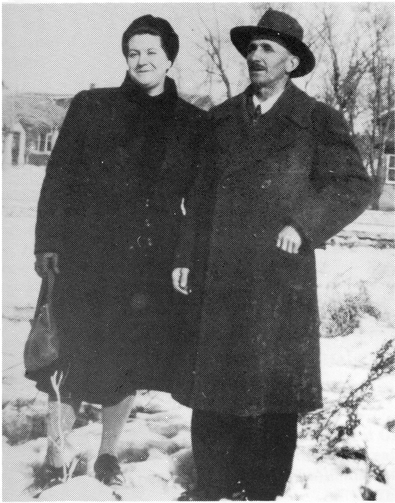
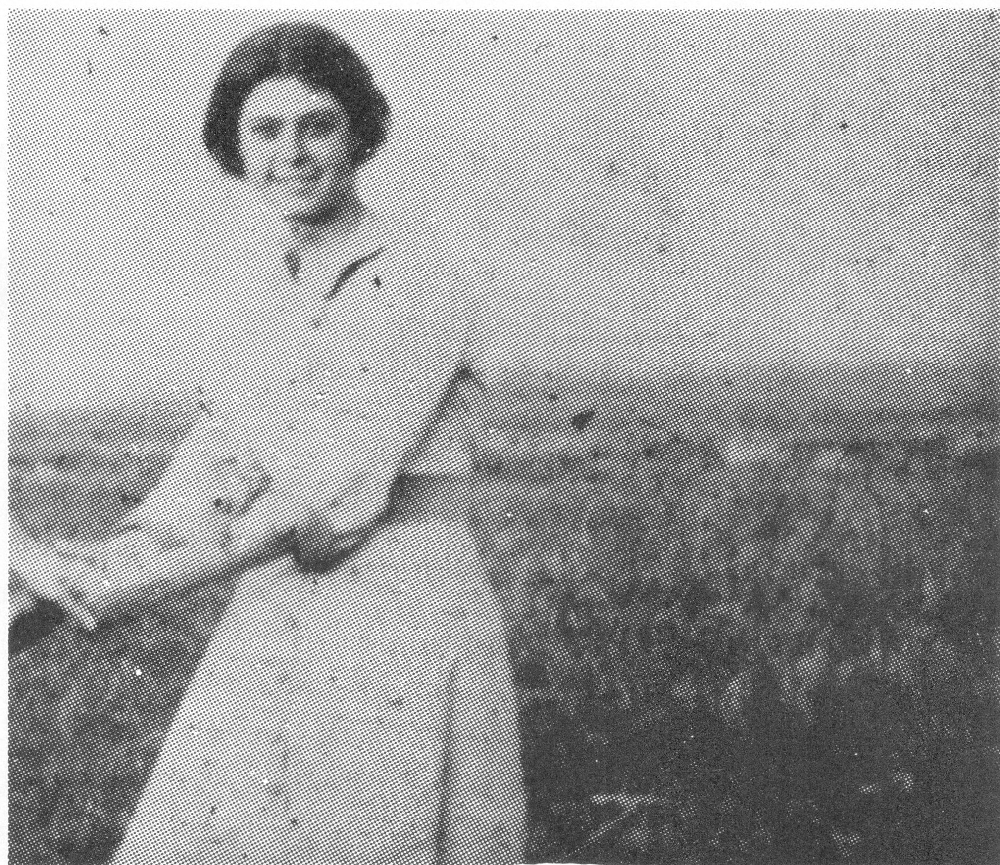

GEORGE L'HEUREUX
George was born on January 6, 1891, the son of Moise L'Heureux and Sophie Pichette. They had come from Quebec to settle in the Jackfish area in 1887. He received his schooling at St. Michael School at Jackfish Lake as well as at the convent in Delmas. When not at school, he worked with his brothers and father to build a ranch on his father's homestead.
When he was able, he took a homestead about four miles west from his parents' home on which he built a house with a log frame, and finished the inside some time later. On September 9, 1914, he married Emilienne Dore, who was a teacher at St. Michael School. As George and Emilienne lived quite far from the school, Moise and Sophie traded land with them, so that Emilienne could continue with her teaching. He then moved his house with horses and wagons onto his new location.

He then bought another 1/4 section of land. Some thirty years later, land opened for one more homestead. My father applied, received it and proved it, using it as a pasture.
My Mother passed away, ten days after my sister's birth on April 30, 1919 from a blood clot. My brother and I were then taken care of by Mr. Bellavance in Delmas, and my new sister, by Uncle Paul L'Heureux, until my father remarried to my mother's sister, Sophranie on November 23, 1920. We were then all reunited. By 1924, our family had increased to five with the addition of two more boys.
George kept on farming with horses and accumulated about 30 head of cattle as well as pigs and chickens. Jackfish Creek separated our home from school. We caught much fish in that creek.
In the winter, George would do some hunting of muskrats, weasels and coyotes. The coyote hunt was quite an experience. It was a race for endurance between the coyote and the hounds, the horses, the runabout (two 2" X 10' runners under a square box) and my Dad. He would leave home with his dogs in the runabout; one dog was a runner with legs about three feet long, the other dog was the killer, the mean one. He would cover the dogs with a horseblanket while going over the open range. When he would locate a coyote, he would sneak up as close as possible, talking quietly to his dogs all the while. When the coyote spotted Dad, he would lift the blanket and holler "GET HIM". Out the dogs would go, and chase until they could go no more. The runner dog would catch up to the coyote and bite his rear legs to slow him down, until the killer would arrive, grab him by the throat and hold him until Dad and the team got there. Many times, Dad would arrive home with a broken runner and up to three coyotes. By the spring, he would have up to one hundred pelts to sell.
In 1927, my father and his brother, Wilfred, bought a Twin City Tractor and threshing machine, now being able to harvest their grain and that of the neighbors. The following year, he bought a 1928 Plymouth. We then travelled in style.
I should add here, that to my knowlege, Mom and Dad's only trip was when they came with us on our honeymoon to St. Paul, Alberta.
In 1931, after his father, Moise, passed away, George bought his ranch. We then worked long, hard days to be able to meet payments. Breaking the land was then done with our Twin City tractor and 51 steel wheels. Around 1940, a salesman came by and demonstrated a tractor on rubber tires, and showed how well it worked the fields. We could hardly believe it! My father bought it and we quickly retired the good old Twin City tractor.

The Second World War then started, making it harder to get help. Two of my brothers enlisted in the service.
It was during those years that the farmers would haul their grain to the elevators and stand there until he was satisfied of the going price and then sell it. At one time, the price was up to around $1.50 per bushel, which was very good. It started dropping by 1 or 2 cents a day. Thinking that it would come back up again, he held off selling. It stopped at 35 cents and he had no choice but to sell.
In 1946, as he was going to finish paying for the ranch, he had a stroke, and was bedridden for 32 years. My mother took care of him for many years until she passed away. Henri, my brother, and his wife took care of him for many years until it was time to go to a nursing home, where he passed away.
My parents lived a very rich, full life. Their favorite pastimes were card games and local dances. Friends and relatives were always welcomed.
This ends my Father's life era of 87 years.
George L'Heureux
| NAME | BORN | MARRIED | SPOUSE | BOY | GIRL | DIED |
|---|---|---|---|---|---|---|
| George | Jan. 6, 1891 | Sept. 22, 1914 | Emilienne Dore | 2 | 1 | Nov. 15, 1978 |
| Emilienne | Apr. 30, 1919 | |||||
| Remarried | Sophronie Dore | 2 | 0 | |||
| Sophronie | Oct. 7, 1964 | |||||
| GEORGE'S FAMILY | ||||||
| Marcel | Sept. 13, 1915 | Oct. 20, 1937 | Lucille Rousseau | 2 | 2 | |
| Lucille | Dec. 5, 1986 | |||||
| Conrad | Apr. 20, 1917 | Nov. 1, 1937 | Julliette Nolan | 2 | 5 | |
| Remarried | Aug. 23, 1984 | Ruth Smith | ||||
| Rejanne | Apr. 20, 1919 | July 4, 1941 | Frank Reber | 1 | 1 | |
| Henri | Nov. 18, 1923 | Jan. 1, 1946 | Antoinette Cadrain | 6 | 3 | |
| Gaston | Apr. 1, 1924 | Oct. 17, 1949 | Claire Cadrain | 2 | 0 | Aug. 14, 1957 |
| George's Grandchildren | ||||||
| MARCEL'S FAMILY | ||||||
| Emilienne | Aug. 6, 1938 | Mar. 8, 1958 | Roland Michaud | 2 | 3 | |
| Clement | June 12, 1941 | Feb. 20, 1960 | Patricia Hazard | 3 | 0 | |
| Henriette | Nov. 18, 1943 | Sept. 26, 1964 | Jim R. Smith | 1 | 0 | |
| Maurice | Aug. 16, 1946 | Sept. 4, 1965 | Uta Poppen | 2 | 0 | |
| George's Great Grandchildren | ||||||
| Marcel's Grandchildren | ||||||
| EMILIENNE'S FAMILY | ||||||
| Dennis | June 19, 1958 | |||||
| Jeanette | Nov. 20, 1959 | July 9, 1977 | Brian Courtney | 2 | 0 | |
| Annette | Nov. 20, 1959 | Oct. 23, 1976 | Darrell Dailey | 0 | 2 | |
| Ronald | Jan. 11, 1963 | |||||
| Carmen | Aug. 29, 1969 | |||||
| CLEMENT'S FAMILY | ||||||
| Roger | July 29, 1960 | Sept. 4, 1982 | Robin Childs | 1 | 1 | |
| Ronald | July 29, 1961 | |||||
| Robert | Oct. 5, 1965 | |||||
| HENRIETTE'S FAMILY | ||||||
| James | Dec. 18, 1971 | |||||
| MAURICE'S FAMILY | ||||||
| Dwayne | Aug. 23, 1966 | |||||
| Shane | Nov. 26, 1968 | |||||
| George's Great Great Grandchildren | ||||||
| Marcel's Great Grandchildren | ||||||
| Emilienne's Grandchildren | ||||||
| ANNETTE'S FAMILY | ||||||
| Gail | Nov. 29, 1976 | |||||
| Jessica | Mar. 12, 1979 | |||||
| JEANETTE'S FAMILY | ||||||
| Ryan | Apr. 13, 1978 | |||||
| Dale | July 23, 1980 | |||||
| Clement's Grandchildren | ||||||
| ROGER'S FAMILY | ||||||
| Michael | Oct. 3, 1983 | |||||
| Chantelle | Mar. 13, 1986 | |||||
| George's Grandchildren | ||||||
| CONRAD'S FAMILY | ||||||
| Delphine | Sept. 5, 1938 | Oct. , 1960 | Bill Lesage | 0 | 1 | |
| Remarried | Apr. 17, 1973 | Ken Philips | 2 | 1 | ||
| Reine | Nov. 27, 1939 | Nov. 1, 1958 | Allan Penny | 2 | 0 | |
| Remarried | , 1970 | Ron Nordin | ||||
| Jean | Nov. 14, 1940 | Sept. , 1941 | ||||
| Jeanne | Nov. 14, 1940 | Sept. , 1941 | ||||
| Delores | May 17, 1942 | Aug. , 1964 | ||||
| Paulette | Apr. 29, 1949 | Mar. 11, 1969 | Alex Sales | 2 | 2 | |
| Jules | Oct. 18, 1950 | Aug. 30, 1975 | Janet Dyck | 1 | 1 | |
| George's Great Grandchildren | ||||||
| Conrad's Grandchildren | ||||||
| DELPHINE'S FAMILY | ||||||
| Juliette Philips | Oct. 9, 1961 | |||||
| Angela (step) | Feb. 7, 1949 | |||||
| Harvey (step) | Jan. 29, 1966 | |||||
| Lawton (step) | Jan. 29, 1966 | |||||
| REINE'S FAMILY | ||||||
| Ian | May 30, 1959 | |||||
| David | June 9, 1963 | Apr. 29, 1983 | Cindy | 1 | 1 | |
| PAULETTE'S FAMILY | ||||||
| Scott | Oct. 12, 1969 | |||||
| Sherralee | Mar. 3, 1972 | |||||
| Sherry (step) | Feb. 9, 1963 | Apr. 19, 1985 | Steve Almond | 1 | ||
| Stuart (step) | July 11, 1965 | |||||
| JULES' FAMILY | ||||||
| Waylon | Aug. 1, 1978 | |||||
| Kayle | Dec. 14, 1982 | |||||
| George's Great Great Grandchildren | ||||||
| Conrad's Great Grandchildren | ||||||
| Reine's Grandchildren | ||||||
| DAVID'S FAMILY | ||||||
| Jason | July 3, 1984 | |||||
| Tiffany | Dec. 20, 1986 | |||||
| Paulette's Grandchildren | ||||||
| SHERRY'S FAMILY | ||||||
| Sheyne | Oct. 6, 1986 | |||||
| George's Grandchildren | ||||||
| REJANNE'S FAMILY | ||||||
| Bonnie | Mar. 6, 1942 | Jan. 13, 1962 | Tom Moreland | 2 | 1 | |
| Gary | Jan. 17, 1945 | Aug.13, 1966 | Mary Whitsel | 1 | 2 | |
| George's Great Grandchildren | ||||||
| Rejanne's Grandchildren | ||||||
| BONNIE'S FAMILY | ||||||
| Greg | Mar. 13, 1963 | |||||
| Denise | June 12, 1966 | |||||
| Travis | Nov. 24, 1974 | |||||
| GARY'S FAMILY | ||||||
| Garth | Jan. 7, 1967 | |||||
| Rejanne | Apr. 7, 1970 | |||||
| Julie Anne | Aug. 11, 1973 | |||||
| George's Grandchildren | ||||||
| HENRI'S FAMILY | ||||||
| Jean | Dec. 6, 1946 | Oct. 11, 1969 | Anne Hobbiebruncan | 1 | 0 | |
| Remarried | Dec. 19, 1981 | Debbie Naismith | 1 | 2 | ||
| Gilbert | Aug. 21, 1948 | Nov. 13, 1971 | Darlene Brydges | 0 | 3 | |
| George | Oct. 8, 1949 | Nov. 11, 1972 | Gisele Hamel | 2 | 1 | |
| Paul | Mar. 11, 1951 | June 9, 1973 | Patti Read | 0 | 0 | |
| Remarried | Sept. 13, 1980 | Lorraine Hanasyk | 1 | 1 | ||
| Marie | Aug. 14, 1952 | Aug. 21, 1971 | Bernard Rowley | 2 | 1 | |
| Claude | Apr. 10, 1954 | May 29, 1976 | June Pirot | 3 | 0 | |
| Rita | Jan. 21, 1956 | Dec. 20, 1980 | Victor Kappel | 0 | 1 | |
| Lionel | July 7, 1959 | July 7, 1979 | Allyson Schumacher | 1 | 1 | |
| Janine | Nov. 7, 1963 | |||||
| George's Great Grandchildren | ||||||
| Henri's Grandchildren | ||||||
| JEAN'S FAMILY | ||||||
| Robbie | Jan. 6, 1976 | |||||
| Rena (step) | Sept. 1, 1975 | |||||
| Elaine (step) | Apr. 4, 1977 | |||||
| Michael | July 17, 1984 | |||||
| GILBERT'S FAMILY | ||||||
| Carmen | Oct. 29, 1972 | |||||
| Lisa (adpt) | Sept. 15, 1975 | |||||
| Rheanne (adpt) | Sept. 25, 1977 | |||||
| GEORGE'S FAMILY | ||||||
| Joel | Nov. 10, 1973 | |||||
| Grant | Sept. 22, 1975 | |||||
| Amy | Oct. 3, 1978 | |||||
| MARIE'S FAMILY | ||||||
| Colin | Aug. 18, 1972 | |||||
| Jason | Aug. 24, 1974 | |||||
| Laura Lee | Nov. 13, 1975 | |||||
| PAUL'S FAMILY | ||||||
| Mark | Feb. 3, 1981 | |||||
| Jennifer | Nov. 24, 1983 | |||||
| CLAUDE'S FAMILY | ||||||
| Daniel | May 8, 1980 | |||||
| Brent | July 10, 1981 | |||||
| Brady | Nov. 25, 1985 | |||||
| RITA'S FAMILY | ||||||
| Janelle | July 29, 1983 | |||||
| LIONEL'S FAMILY | ||||||
| Rylan | Sept. 14, 1980 | |||||
| Cohen | June 23, 1982 | |||||
| George's Grandchildren | ||||||
| GASTON'S FAMILY | ||||||
| Guy | Aug. 31, 1950 | Dec. 4, 1971 | Judy | 1 | 1 | |
| Blair | July 28, 1953 | Apr. 24, 1976 | Karen Hunt | 1 | 1 | |
| George's Great Grandchildren | ||||||
| Gaston's Grandchildren | ||||||
| GUY'S FAMILY | ||||||
| Desiree | May 23, 1978 | |||||
| Dallan | May 14, 1983 | |||||
| BLAIR'S FAMILY | ||||||
| Kari Lee | Aug. 21, 1976 | |||||
| Casey | Mar. 14, 1979 | |||||
| TOTAL DESCENDANTS | 130 |
| LIVING | 122 |
| DECEASED | 8 |